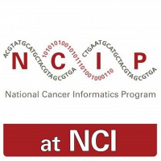

NCIP Open Source

Supporting
Cancer Research
with Open Source
Visit
ncip.nci.nih.gov
Wiki Pages
Recently updated
View All on GitHub
Statistics
public repos
members
opensource@nci.nih.gov
Cancer Biology and Genomics
Clinical and Translational
Semantics and Interoperability